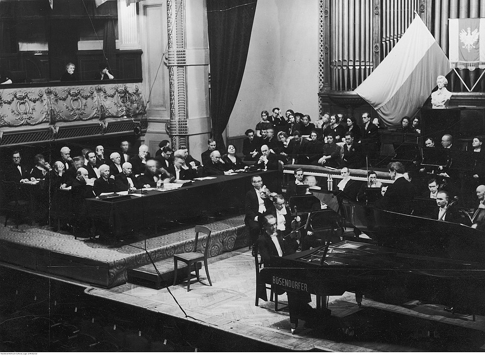

Międzynarodowy Konkurs Pianistyczny im. Fryderyka Chopina (często nazywany skrótowo Konkursem Chopinowskim) – jeden z najstarszych i prestiżowych konkursów muzycznych na świecie w klasie fortepianu, odbywający się co 5 lat w Warszawie. Jest również jednym z niewielu konkursów monograficznych, we wszystkich bowiem jego etapach wykonywane są wyłącznie utwory jednego kompozytora. Zainicjowany został w 1927 przez polskiego pianistę, profesora Jerzego Żurawlewa dzięki gwarancjom finansowym Henryka Rewkiewicza. Historia konkursu dowiodła, że jego laureaci mają praktyczną gwarancję zaprezentowania się na międzynarodowej scenie pianistycznej i prawo do występów w największych salach koncertowych oraz nagrań autorskich płyt w renomowanych wytwórniach płytowych.

Koncert w roku 1937